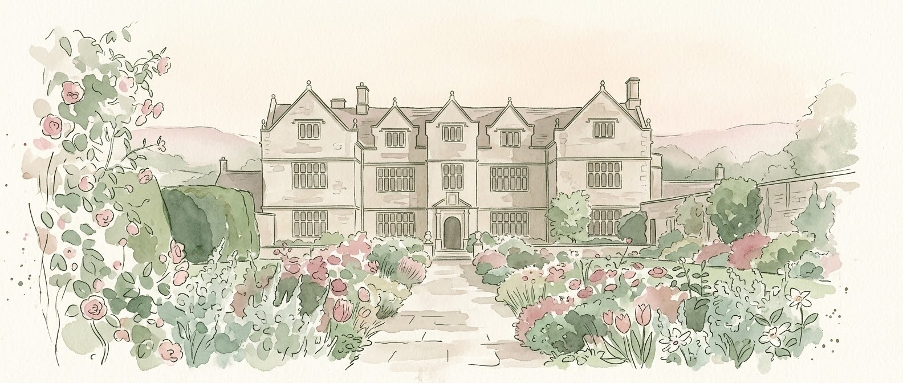
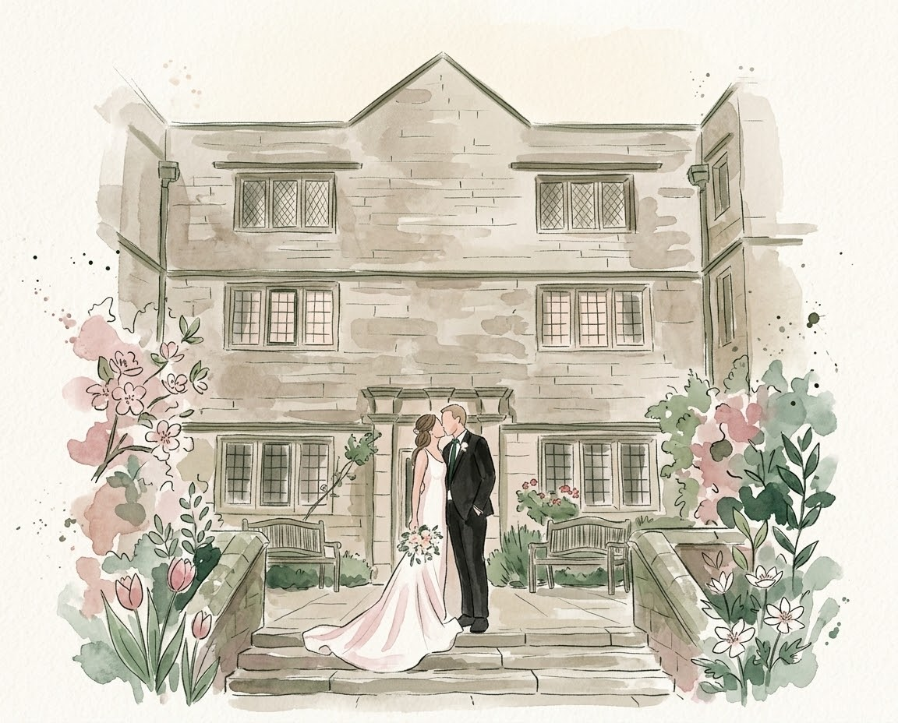
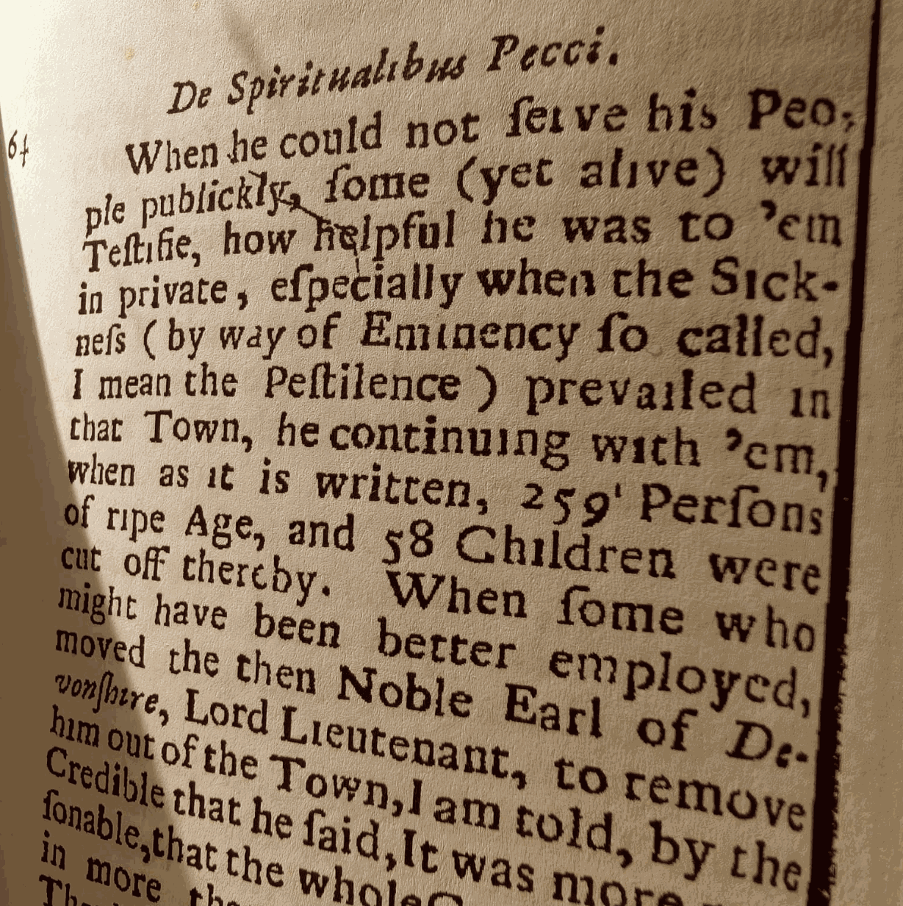

Where to Stay
Eyam and the surrounding Hope Valley have plenty of welcoming places to stay, from village inns to country guesthouses.

We'd suggest booking early, as spring is a popular time in the Peak District. A few favourites to start you off:
- The Miners Arms, Eyam — a historic pub with cosy rooms, within walking distance of the hall
- The Maynard, Grindleford — a boutique hotel a short drive away, near Grindleford station
- The Rutland Arms Hotel, Bakewell — a historic coaching inn in the centre of Bakewell, for a wider choice of rooms
For more options, see the full accommodation list provided by Eyam Hall.

A Wedding Gift of Our Own
Eyam Hall has a wedding in its own history. This gritstone Jacobean manor was built in 1671 by Thomas Wright as a wedding present for his son John and his new wife, Elizabeth. It has been a Wright family home ever since, passed down through many generations over more than 350 years, and the family still look after it today, alongside the craft centre and gardens. We love that the place where we are getting married began, centuries ago, as someone else’s wedding gift.

The Village of Eyam
Eyam is a historic Peak District village, best known as England’s “plague village” for the way its residents chose to isolate themselves in 1665–66 to protect neighbouring communities. Today it is a peaceful and beautiful place to spend time. The earliest surviving account comes from William Bagshaw (1628–1702), the “Apostle of the Peak”, whose 1702 book De Spiritualibus Pecci describes how the minister Thomas Stanley stayed on privately to help the town through it. Bagshaw put the toll at 259 adults and 58 children — modern research puts the total closer to 260.
This is just a snapshot of Eyam’s remarkable history. If you are staying for longer, we would recommend visiting the Eyam Museum to find out more. Please check their website for opening times.